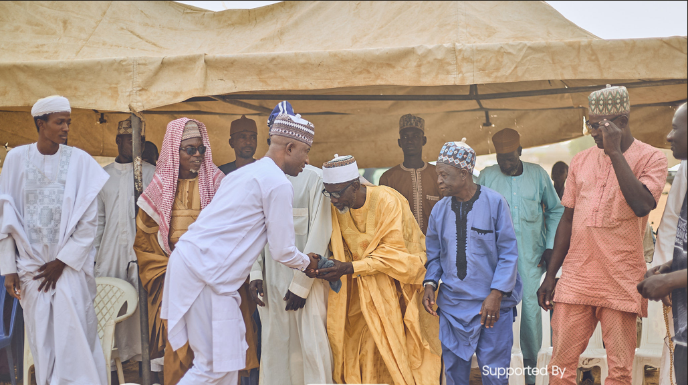

Our work is anchored on the belief that sustainable development requires inclusive participation and locally driven solutions. VINET works across five connected focus areas that strengthen communities, empower women and young people, and create lasting change.
Promoting accountability, transparency, good governance, citizen participation and democratic leadership.
Supporting quality education, leadership development, digital literacy and capacity building.
Advancing environmental awareness, community resilience and locally driven solutions for a more sustainable future.
Encouraging peaceful coexistence, dialogue, conflict prevention and community resilience.
Promoting equal opportunities, women leadership, girls' education and social inclusion.

We combine evidence-based advocacy, leadership development, community engagement and strategic partnerships to build pathways for communities to thrive and generations to lead.
Together we can build stronger, more inclusive communities.
Get Involved